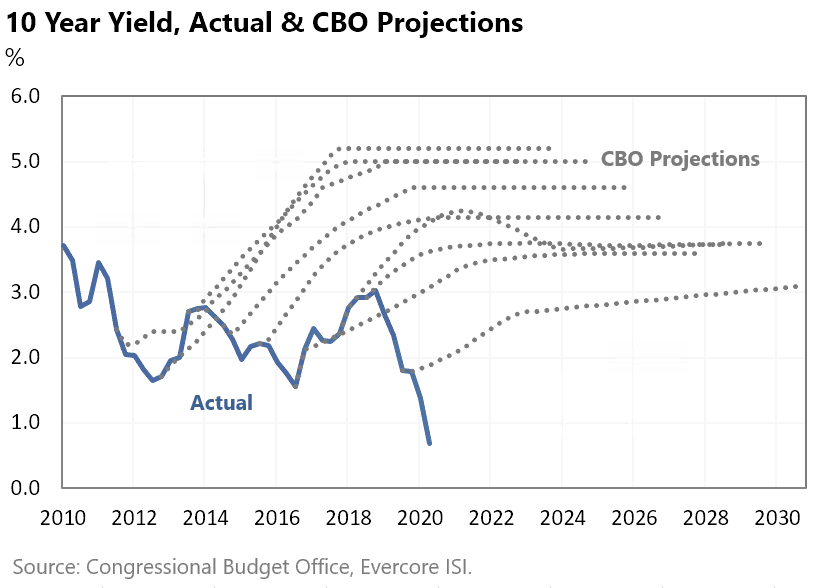

Breakthroughs, that step-change our lives for the better, invariably come from something that most
people couldn’t see. Our belief of how the world should exist and operate is shaped from looking
backwards, not forward, so it makes sense that new paradigms that change everything — face
resistance in our minds. Because most people don’t see them, breaking through an existing paradigm
needs to provide enough compelling value for users to disrupt an old paradigm. Apple’s iPhone for
instance, didn’t copy the market leader, Research in Motion’s Blackberry design of needing a
keyboard or selling to businesses who required RIM’s security. It created a digital interface when
that wasn’t ‘needed’ and created an entirely new platform that changed the industry as a result.
Along the way, the Blackberry died, unable to compete with the value for users, that was now
increasing exponentially on Apple’s platform.
Also, note that I have attempted to look at the structural change through a ‘system lens’ rather
than a ‘people lens’. Although any system has bad actors, the predominant force driving decisions
are not because of willful neglect or bad intent, but instead, to protect the status quo (and
monopoly) because it’s very hard to imagine what the future could look like without it.
2 : Interest rates were manipulated lower to increase growth — and almost every year, taken lower
again as predictions of growth came up short against the reality of technological progress on the
market. Although the chart below references the United States, this was a global phenomenon.

The lower rates and additional debt created produced limited growth which is to say deflation
(prices going down) would have taken hold without it and made the debt un-repayable — causing a
larger deflationary depression than would have happened in step 1.
*Note* because technology is continuing to advance exponentially, it will take exponentially more
debt and easing to keep the existing system intact.
Because, unmanipulated, the result of all of that free-market competition must give us more for less
or we wouldn’t use it. This is to say that a monetary standard like Bitcoin would ensure the
exponentially improving value created by a combination of technology and competition, would fall in
price to match the new realities of supply and demand in a digital world. That seemingly small
change, unnoticed by most of society, changes everything else. In time, society will realize that it
also allows for an expansion of the very meaning of success.
In the great game of business, a monopoly rarely dies overnight. They have too much market power for
that. What often happens is that they miss a key technological change that would have allowed them
to offer value differently and then set out on a series of actions to protect their existing
business. Because the change delivers better value to society, those actions to protect what was all
but guaranteed failure in the end.
It is bound to be an epic battle.
A battle between the free market and entrepreneurs competing to create more value on one side, and
manipulation and power concentrated in the hands of a few — eventually leading to totalitarian
control on the other.
My hope for humanity is that we’re on the winning side.
By Jeff Booth
Nov 2020